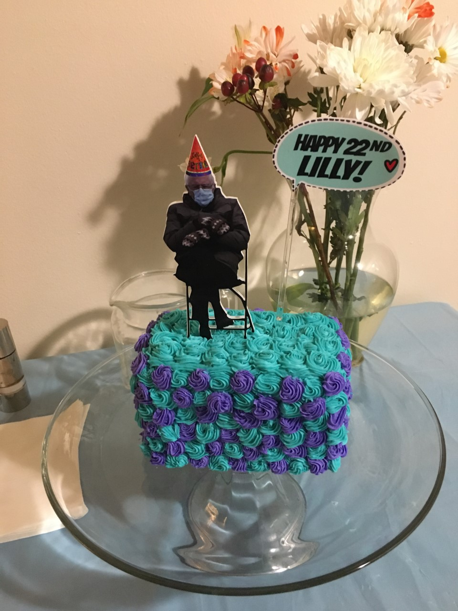
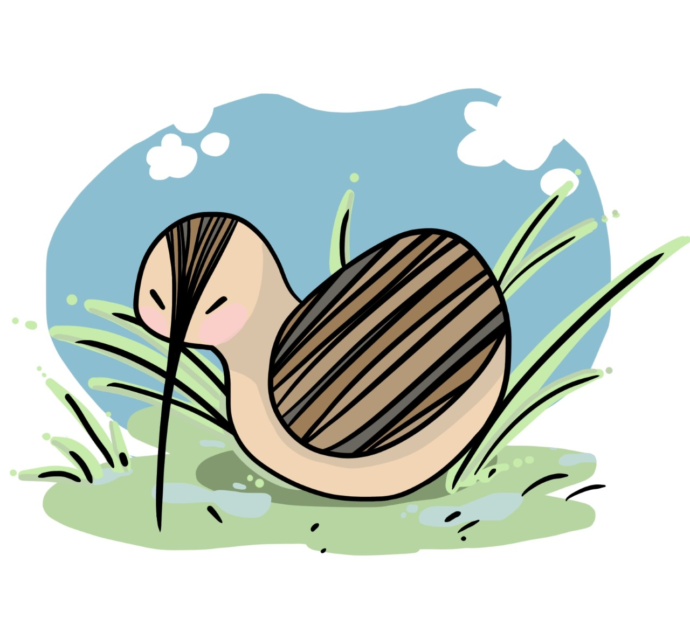

What do I do for Fun?
Any chance I get, I'll bake cakes and other fun desserts for anyone that asks (unless I'm rediculously busy)! I made my first
one for my Mom's birthday when I was 15. It was, um, definitely a sight to see. She didn't mind and everyone at the party gobbled it
down anyway. It gave me the confidence to continue. So far I've gotten better at marbled cakes with multiple colors, not before staining several pots and
bowls and a table, two layered cakes, and making my own fun icings with varieties of flavors. My latest cake (shown below), was one
I made for my 22nd birthday earlier this month. It was a marbled chocolate and vanilla cake base with cream cheese frosting. I kept breaking piping bags
because I'd added too much powdered sugar to keep it from falling off, but I did my best with what I could find when I ran out. The party was meme themed,
so my cake topper was Bernie Sanders with his mittens. No, I did not set the sign on fire. Not this time anyway.
I've been drawing since I was little. For some reason, it helped me clear my mind and focus more in classes, so I never really
stopped. For one semester I tried majoring in it only to quickly realize that you shouldn't do anything you do for a relaxing hobby
for a career. Although I learned a lot, it took much of the joy out of it for me. Instead, I found a field where I can love what I do, still be
creative, and also get into a work mindset. There hasn't been as much time for it recently as I would prefer, between school and work,
but I sculpt, do ink drawings, do 3D and 2D computer art, and paint whenever I can!


